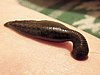

hirudinea

Has synonym(s): leech
Definition: Leeches are segmented parasitic or predatory worms that comprise the subclass Hirudinea within the phylum Annelida. They are closely related to the oligochaetes, which include the earthworm, and like them have soft, muscular segmented bodies that can lengthen and contract. Both groups are hermaphrodites and have a clitellum, but leeches typically differ from the oligochaetes in having suckers at both ends and in having ring markings that do not correspond with their internal segmentation. The body is muscular and relatively solid, and the coelom, the spacious body cavity found in other annelids, is reduced to small channels.
Source: Wikipedia
Wikipedia Page (Something wrong with this association? Let us know.)
Wikidata Page (Something wrong with this association? Let us know.)